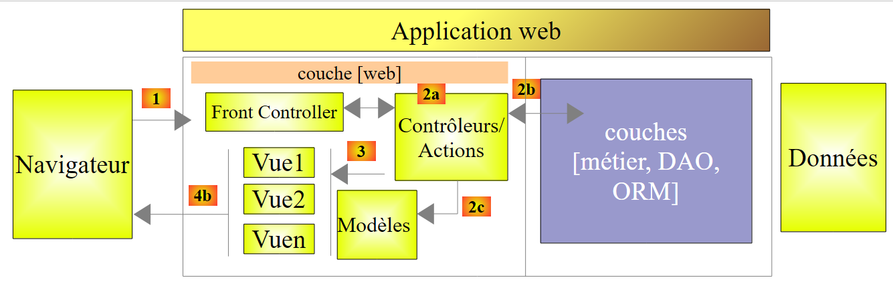
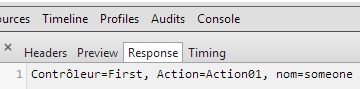
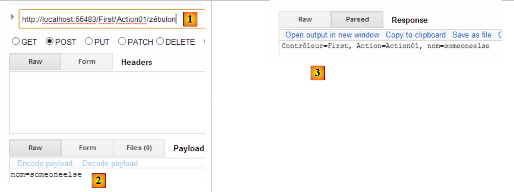
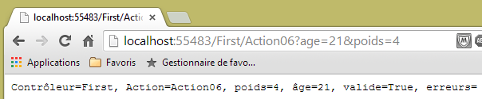
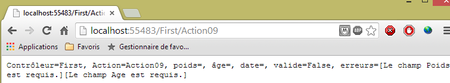
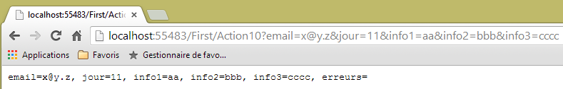
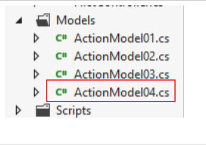
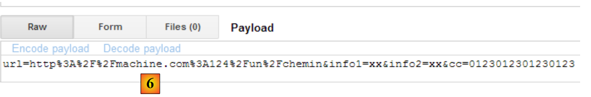
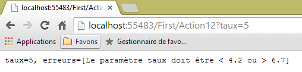

4. Il modello di un'azione
Torniamo all’architettura di un’applicazione ASP.NET MVC:
 |
Nel capitolo precedente abbiamo esaminato il processo che porta la richiesta [1] al controller e all’azione [2a] che la elaboreranno, un meccanismo chiamato routing. Abbiamo inoltre illustrato le diverse risposte che un’azione può fornire al browser. Finora abbiamo presentato azioni che non sfruttavano la richiesta loro sottoposta. Una richiesta [1] trasporta con sé diverse informazioni che ASP.NET e MVC presentano all’azione sotto forma di modello. Non si deve confondere questo termine con il modello M di una vista V [2c] che viene generato dall’azione:
 |
- la richiesta HTTP del cliente arriva come [1];
- in [2], le informazioni contenute nella richiesta verranno trasformate nel modello di azione [3], spesso (ma non necessariamente) una classe, che fungerà da input per l’azione [4];
- in [4], l’azione, a partire da questo modello, genererà una risposta. Questa avrà due componenti: una vista V [6] e il modello M di tale vista [5];
- la vista V [6] utilizzerà il proprio modello M [5] per generare la risposta HTTP destinata al cliente.
Nel modello MVC, l'azione [4] fa parte del C (controllore), il modello della vista [5] è l'M e la vista [6] è la V.
Questo capitolo esamina i meccanismi di collegamento tra le informazioni trasportate dalla richiesta, che sono per loro natura stringhe di caratteri, e il modello dell’azione, che può essere una classe con proprietà di vario tipo.
4.1. Inizializzazione dei parametri dell’azione
Aggiungiamo alla soluzione esistente un nuovo progetto [1] basato su ASP.NET e MVC:
 |
 |
- in [2], il nome del nuovo progetto;
- in [3, 4], scegliamo un progetto di base ASP.NET MVC;
- in [5], il nuovo progetto.
Il nuovo progetto diventerà il progetto di avvio della soluzione.
Come fatto nel paragrafo 3.1, creiamo un controller denominato [First] [1]:
 |
In questo controller, creiamo la seguente azione [Action01]:
using System.Web.Mvc;
namespace Exemple_02.Controllers
{
public class FirstController : Controller
{
// Azione01
public ContentResult Action01(string nom)
{
return Content(string.Format("Contrôleur=First, Action=Action01, nom={0}", nom));
}
}
}
La novità si trova alla riga 8: il metodo [Action01] ha un parametro. In questo capitolo ci occuperemo dei diversi modi per inizializzare i parametri di un’azione. Il parametro [nom] sopra riportato viene inizializzato in ordine con i seguenti valori:
Request.Form["nom"] | un parametro denominato [nom] inviato da un comando POST |
RouteData.Values["nom"] | un elemento di URL denominato [nom] |
Request.QueryString["nom"] | un parametro denominato [nom] inviato da un comando GET |
Request.Files["nom"] | un file caricato denominato [nom] |
Esaminiamo questi diversi casi. Richiediamo direttamente nel browser il file URL [/First/Action01?nom=someone]. Otteniamo la seguente risposta:
 |
La richiesta HTTP effettuata dal browser era la seguente:
- riga 1: la richiesta è un GET. Il URL richiesto include il parametro [nom]. Sul lato server, la richiesta arriva all’azione [Action01], che presenta la seguente firma:
public ContentResult Action01(string nom)
Per assegnare un valore al parametro «nom», ASP.NET MVC prova in successione e nell’ordine i valori Request.Form["nom"], RouteData.Values["nom"], Request.QueryString["nom"], Request.Files["nom"]. Si interrompe non appena trova un valore. Il parametro [nom], contenuto nel URL del GET, è stato inserito dal framework nel Request.QueryString["nom"]. È con questo valore [someone] che verrà inizializzato il parametro [nom] di [Action01]. Successivamente viene eseguito il codice di [Action01]:
return Content(string.Format("Contrôleur=First, Action=Action01, nom={0}", nom), "text/plain", Encoding.UTF8);
Questo codice fornisce la risposta inviata al client:
 |
Nota: il meccanismo di associazione dei parametri non fa distinzione tra maiuscole e minuscole. Pertanto, se la nostra azione è definita come:
public ContentResult Action01(string NOM)
e il parametro passato è [?NoM=zébulon], il collegamento avverrà correttamente. Il parametro [NOM] di [Action01] riceverà il valore [zébulon].
Ora, richiediamo lo stesso URL con un POST. A tal fine, utilizziamo l’applicazione [Advanced Rest Client]:
 |
- in [1], il URL richiesto;
- in [2] verrà utilizzato il comando POST;
- in [3], i parametri di POST.
Inviamo questa richiesta e controlliamo i log di HTTP. La richiesta HTTP è la seguente:
 |
- in [1], il POST;
- in [2], i parametri di POST. Tecnicamente, sono stati inviati dopo le intestazioni di HTTP, dopo la riga vuota che segnala la fine di tali intestazioni;
- nel [3], la risposta ottenuta. Si recupera correttamente il parametro [nom] dal POST. Tra i valori provati per il parametro «nom» Request.Form["nom"], RouteData.Values["nom"], Request.QueryString["nom"], Request.Files["nom"], è stato il primo a funzionare.
Ora modifichiamo il percorso predefinito in [App_Start/RouteConfig]. Attualmente, questo percorso è il seguente:
routes.MapRoute(
name: "Default",
url: "{controller}/{action}/{id}",
defaults: new { controller = "Home", action = "Index", id = UrlParameter.Optional }
);
Modifichiamola in:
routes.MapRoute(
name: "Default",
url: "{controller}/{action}/{nom}",
defaults: new { controller = "Home", action = "Index", nom = UrlParameter.Optional }
);
- alla riga 3, abbiamo denominato [nom] il terzo elemento di un percorso;
- riga 4, questo elemento è dichiarato opzionale.
Ora ricompiliamo l’applicazione e richiediamo URL [/First/Action01/zébulon] direttamente nel browser. Otteniamo la seguente risposta:
 |
Tra i valori provati per il parametro «nom» figurano: Request.Form["nom"], RouteData.Values["nom"], Request.QueryString["nom"], Request.Files["nom"], è stato il secondo a funzionare.
Eseguiamo la stessa richiesta con POST e [Advanced Rest Client]:
 |
- in [1], abbiamo assegnato un valore all’elemento {nom} del percorso;
- in [2], si aggiunge un parametro [nom] alla richiesta inviata;
- la risposta ottenuta è in [3].
Tra i valori provati per il parametro [nom], Request.Form["nom"], RouteData.Values["nom"], Request.QueryString["nom"], Request.Files["nom"], due erano validi, i primi due. È stato utilizzato il primo.
4.2. Verifica della validità dei parametri dell’azione
Se un'azione ha un parametro denominato [p], ASP.NET e MVC tenteranno di assegnarle uno dei valori Request.Form["p"], RouteData.Values["p"], Request.QueryString["p"], Request.Files["p"]. I primi tre valori sono stringhe di caratteri. Se il parametro [p] non è di tipo [string], potrebbero verificarsi dei problemi.
Creiamo la seguente nuova azione:
// Azione02
public ContentResult Action02(int age)
{
string texte = string.Format("Contrôleur={0}, Action={1}, âge={2}", RouteData.Values["controller"], RouteData.Values["action"],age);
return Content(texte, "text/plain", Encoding.UTF8);
}
- riga 2, l’azione [Action02] accetta un parametro denominato [age] di tipo int. La stringa di caratteri recuperata dovrà essere convertibile in int.
Richiediamo l’azione URL [http://localhost:55483/First/Action02?age=21]. Si ottiene la seguente pagina:
 |
Richiediamo URL e [http://localhost:55483/First/Action02?age=21x]. Si ottiene la pagina seguente:
 |
Questa volta è stata visualizzata una pagina di errore. È interessante osservare le intestazioni HTTP inviate dal server in questo caso:
- riga 1: il server ha risposto con un codice [500 Internal Server Error] e ha inviato una pagina HTML (riga 3) di 12438 byte (riga 5) per spiegare le possibili cause di questo errore.
Creiamo ora la seguente azione [Action03]:
// Azione03
public ContentResult Action03(int? age)
{
...
}
[Action03] è identico a [Action02], tranne per il fatto che il tipo del parametro [age] è stato modificato in int?, ovvero intero o null.
Richiediamo URL e [http://localhost:55483/First/Action03?age=21x]. Si ottiene la seguente pagina:
 |
ASP.NET MVC non è riuscito a convertire [21x] nel tipo int. Ha quindi assegnato il valore null al parametro [age], come consentito dal suo tipo int?. È tuttavia possibile verificare se il parametro abbia ricevuto o meno un valore dalla richiesta.
Creiamo la seguente nuova azione [Action04]:
// Azione04
public ContentResult Action04(int? age)
{
bool valide = ModelState.IsValid;
string texte = string.Format("Contrôleur={0}, Action={1}, âge={2}, valide={3}", RouteData.Values["controller"], RouteData.Values["action"], age, valide);
return Content(texte, "text/plain", Encoding.UTF8);
}
- riga 2: è stato mantenuto il tipo [int?]. Ciò consente in particolare alla richiesta di non fornire il parametro [age], che riceve quindi il valore null;
- riga 4: si verifica se il modello dell'azione è valido. Il modello dell'azione è costituito dall'insieme dei suoi parametri, in questo caso [age]. Il modello è valido se tutti i parametri hanno potuto ottenere un valore dalla richiesta oppure il valore null, se il tipo del parametro lo consente;
- riga 5: si aggiunge il valore della variabile [valide] nel testo inviato al client.
Richiediamo URL [http://localhost:55483/First/Action04?age=21x]. Si ottiene la seguente pagina:
 |
ASP.NET MVC non è riuscito a convertire [21x] nel tipo int. Ha quindi assegnato il valore null al parametro [age], come consentito dal suo tipo int?. Tuttavia, si sono verificati errori di conversione, come dimostra il valore di [valide].
È possibile visualizzare il messaggio di errore associato a una conversione non riuscita. Esaminiamo la seguente nuova azione:
// Azione05
public ContentResult Action05(int? age)
{
string erreurs = getErrorMessagesFor(ModelState);
string texte = string.Format("Contrôleur={0}, Action={1}, âge={2}, valide={3}, erreurs={4}", RouteData.Values["controller"], RouteData.Values["action"], age, ModelState.IsValid, erreurs);
return Content(texte, "text/plain", Encoding.UTF8);
}
La novità si trova alla riga 4. Qui viene chiamato un metodo privato [getErrorMessagesFor] a cui viene passato lo stato del modello dell’azione. Esso restituisce una stringa di caratteri che riunisce i messaggi di tutti gli errori che si sono verificati. Questo metodo è il seguente:
private string getErrorMessagesFor(ModelStateDictionary état)
{
List<String> erreurs = new List<String>();
string messages = string.Empty;
if (!état.IsValid)
{
foreach (ModelState modelState in état.Values)
{
foreach (ModelError error in modelState.Errors)
{
erreurs.Add(getErrorMessageFor(error));
}
}
foreach (string message in erreurs)
{
messages += string.Format("[{0}]", message);
}
}
return messages;
}
- riga 1: il parametro effettivo [ModelState] passato al metodo è di tipo [ModelStateDictionary];
- riga 3: un elenco di messaggi di errore, inizialmente vuoto;
- riga 5: si verifica se lo stato passato come parametro è valido o meno. In caso contrario, si raggruppano tutti i messaggi di errore in un'unica stringa di caratteri;
- riga 7: il tipo [ModelStateDictionary] ha una proprietà [Values] che è una collezione di tipi [ModelState]. C'è un [ModelState] per ogni elemento del modello. Ad esempio:
- ModelState["age"]: lo stato del modello dell'azione per il parametro [age],
- ModelState["age"].Errors: la raccolta degli errori relativi a questo parametro. Gli errori sono del tipo [ModelError],
- ModelState["age"].Errors[i].ErrorMessage: l'eventuale messaggio di errore n. i per il parametro [age] del modello
- ModelState["age"].Errors[i].Exception: l'eccezione dell'errore n. i della raccolta degli errori relativa al parametro [age],
- ModelState["age"].Errors[i].Exception.InnerException: la causa di questa eccezione,
- ModelState["age"].Errors[i].Exception.InnerException.Message: il messaggio relativo alla causa dell'eccezione;
- riga 9: si scorre la collezione [Errors] di un particolare [ModelState];
- riga 11: si recupera il messaggio di errore di un particolare [ModelError] e lo si aggiunge all'elenco dei messaggi di errore della riga 3;
- righe 14-17: si uniscono gli elementi dell’elenco dei messaggi di errore in un’unica stringa di caratteri.
Il metodo [getErrorMessageFor] della riga 11 è il seguente:
private string getErrorMessageFor(ModelError error)
{
if (error.ErrorMessage != null && error.ErrorMessage.Trim() != string.Empty)
{
return error.ErrorMessage;
}
if (error.Exception != null && error.Exception.InnerException == null && error.Exception.Message != string.Empty)
{
return error.Exception.Message;
}
if (error.Exception != null && error.Exception.InnerException != null && error.Exception.InnerException.Message != string.Empty)
{
return error.Exception.InnerException.Message;
}
return string.Empty;
}
- riga 1: si riceve un tipo [ModelError] che incapsula un errore su uno degli elementi del modello dell’azione. Si recupera il messaggio di errore in tre posizioni diverse:
- in [ModelError].ErrorMessage, righe 3-6;
- in [ModelError].Exception.Message, righe 7-10;
- in [ModelError].Exception.InnerException.Message, righe 11-14;
Durante i test, si nota che il messaggio di errore si trova in questi tre punti a seconda della natura dell’elemento del modello. Deve esserci una regola che permetta di ottenere con certezza il messaggio di errore associato a un elemento del modello, ma non la conosco. Lo cerco quindi nei diversi punti in cui posso trovarlo, seguendo un certo ordine. Non appena viene trovato un messaggio non vuoto, viene restituito.
Proviamo a richiedere URL [http://localhost:55483/First/Action05?age=21x]. Si ottiene la seguente pagina:
 |
4.3. Un'azione con più parametri
Consideriamo la seguente nuova azione:
// Azione06
public ContentResult Action06(double? poids, int? age)
{
string erreurs = getErrorMessagesFor(ModelState);
string texte = string.Format("Contrôleur={0}, Action={1}, poids={2}, âge={3}, valide={4}, erreurs={5}", RouteData.Values["controller"], RouteData.Values["action"], poids, age, ModelState.IsValid, erreurs);
return Content(texte, "text/plain", Encoding.UTF8);
}
- riga 2: abbiamo due parametri, [poids] e [age].
Le regole descritte in precedenza si applicano ora a entrambi i parametri. Ecco alcuni esempi di esecuzione:
 |
 |
4.4. Utilizzare una classe come modello per un'azione
Definiamo una classe che fungerà da modello per un'azione. La inseriamo nella cartella [Models] [1].
 |
Il suo codice sarà il seguente:
namespace Exemple_02.Models
{
public class ActionModel01
{
public double? Poids { get; set; }
public int? Age { get; set; }
}
}
La nostra classe ha come proprietà automatiche i due parametri [Poids] e [Age] studiati in precedenza. Questa classe costituirà il parametro di input dell’azione [Action07]:
// Azione07
public ContentResult Action07(ActionModel01 modèle)
{
string erreurs = getErrorMessagesFor(ModelState);
string texte = string.Format("Contrôleur={0}, Action={1}, poids={2}, âge={3}, valide={4}, erreurs={5}", RouteData.Values["controller"], RouteData.Values["action"], modèle.Poids, modèle.Age, ModelState.IsValid, erreurs);
return Content(texte, "text/plain", Encoding.UTF8);
}
- riga 2: il modello dell'azione è un'istanza di tipo [ActionModel01].
Riprendiamo gli stessi due esempi di prima:
 |
 |
Si noti che il collegamento dei parametri non fa distinzione tra maiuscole e minuscole. I parametri della richiesta erano [age] e [poids]. Essi hanno popolato le proprietà [Age] e [Poids] della classe [ModelAction01].
Inoltre, finora abbiamo utilizzato le query HTTP e [GET]. Dimostriamo che le query [POST] hanno lo stesso comportamento. A tal fine utilizziamo nuovamente l’applicazione [Advanced Rest Client]:
 |
- in [1], la richiesta URL;
- in [2], sarà richiesta tramite un comando POST;
- in [3], i parametri di POST.
Si ottiene la stessa risposta che con il GET:

4.5. Modello dell'azione con vincoli di validità - 1
Con il modello precedente:
namespace Exemple_02.Models
{
public class ActionModel01
{
public double? Poids { get; set; }
public int? Age { get; set; }
}
}
i parametri [poids] e [age] possono essere omessi dalla richiesta. In questo caso, le proprietà [Poids] e [Age] assumono il valore [null] e non viene segnalato alcun errore. Si potrebbe voler modificare il modello come segue:
namespace Exemple_02.Models
{
public class ActionModel01
{
public double Poids { get; set; }
public int Age { get; set; }
}
}
Nelle righe 5 e 6, le proprietà [Poids] e [Age] non possono più assumere il valore [null]. Vediamo cosa succede con questo nuovo modello quando i parametri [poids] e [age] sono assenti dalla richiesta.
 |
Non si sono verificati errori e le proprietà [Poids] e [Age] hanno mantenuto il loro valore di inizializzazione: 0. ASP.NET MVC:
- ha creato un'istanza del modello tramite un new ActionModel01. È in questo momento che le proprietà [Poids] e [Age] hanno ricevuto il valore 0;
- non ha assegnato alcun valore a queste due proprietà poiché non era presente alcun parametro con il loro nome.
Il primo modello ci permette di verificare l’assenza di un parametro: la proprietà corrispondente assume quindi il valore [null]. Il secondo modello non lo consente. È possibile aggiungere altri vincoli di validazione oltre al semplice tipo dei parametri. Li presenteremo ora.
Consideriamo il seguente nuovo modello di azione:
 |
using System.ComponentModel.DataAnnotations;
namespace Exemple_02.Models
{
public class ActionModel02
{
[Required]
[Range(1, 200)]
public double? Poids { get; set; }
[Required]
[Range(1, 150)]
public int? Age { get; set; }
}
}
- riga 6: indica che il campo [Poids] è obbligatorio;
- riga 7: indica che il campo [Poids] deve rientrare nell’intervallo [1,200];
- riga 9: indica che il campo [Age] è obbligatorio;
- riga 7: indica che il campo [Age] deve rientrare nell'intervallo [1,150];
L'azione che utilizza questo modello sarà la seguente azione [Action08]:
// Azione08
public ContentResult Action08(ActionModel02 modèle)
{
string erreurs = getErrorMessagesFor(ModelState);
string texte = string.Format("Contrôleur={0}, Action={1}, poids={2}, âge={3}, valide={4}, erreurs={5}", RouteData.Values["controller"], RouteData.Values["action"], modèle.Poids, modèle.Age, ModelState.IsValid, erreurs);
return Content(texte, "text/plain", Encoding.UTF8);
}
- riga 2: l'azione riceve un'istanza del modello [ActionModel02];
Facciamo alcuni test:
 |
 |
 |
 |
Gli errori vengono rilevati correttamente. Ora modifichiamo il modello come segue:
using System.ComponentModel.DataAnnotations;
namespace Exemple_02.Models
{
public class ActionModel02
{
[Required]
[Range(1, 200)]
public double Poids { get; set; }
[Required]
[Range(1, 150)]
public int Age { get; set; }
}
}
Alle righe 8 e 11, le proprietà non possono più assumere il valore [null]. Compiliamo e ripetiamo il test senza parametri:
 |
L'assenza di parametri ha fatto sì che le proprietà [Poids] e [Age] abbiano mantenuto il valore acquisito durante l'istanziazione del modello: 0. La validazione avviene successivamente. L'attributo [Required] risulta quindi soddisfatto. Si nota che il messaggio di errore sopra riportato riguarda l’attributo [Range]. Pertanto, per verificare la presenza di un parametro, è necessario che la proprietà associata sia nullable, ovvero che possa assumere il valore null.
Torniamo al modello iniziale [ActionModel02] e consideriamo un’azione il cui modello è costituito da un’istanza [ActionModel02] e da un tipo [DateTime] nullable:
// Azione09
public ContentResult Action09(ActionModel02 modèle, DateTime? date)
{
string erreurs = getErrorMessagesFor(ModelState);
string texte = string.Format("Contrôleur={0}, Action={1}, poids={2}, âge={3}, date={4}, valide={5}, erreurs={6}", RouteData.Values["controller"], RouteData.Values["action"], modèle.Poids, modèle.Age, date, ModelState.IsValid, erreurs);
return Content(texte, "text/plain", Encoding.UTF8);
}
Effettuiamo alcuni test:
 |
Non sono stati passati parametri all’azione. Gli attributi [Required] delle proprietà [Poids] e [Age] hanno funzionato correttamente. Alla data è stato assegnato il valore null e non è stato segnalato alcun errore.
Ora passiamo dei parametri non validi:
 |
Ora passiamo valori validi:
 |
Esaminiamo altri vincoli di validità. Il nuovo modello di azione è il seguente:
 |
using System.ComponentModel.DataAnnotations;
namespace Exemple_02.Models
{
public class ActionModel03
{
[Required(ErrorMessage = "Le paramètre email est requis")]
[EmailAddress(ErrorMessage = "Le paramètre email n'a pas un format valide")]
public string Email { get; set; }
[Required(ErrorMessage = "Le paramètre jour est requis")]
[RegularExpression(@"^\d{1,2}$", ErrorMessage = "Le paramètre jour doit avoir 1 ou 2 chiffres")]
public string Jour { get; set; }
[Required(ErrorMessage = "Le paramètre info1 est requis")]
[MaxLength(4, ErrorMessage = "Le paramètre info1 ne peut avoir plus de 4 caractères")]
public string Info1 { get; set; }
[Required(ErrorMessage = "Le paramètre info2 est requis")]
[MinLength(2, ErrorMessage = "Le paramètre info2 ne peut avoir moins de 2 caractères")]
public string Info2 { get; set; }
[Required(ErrorMessage = "Le paramètre info3 est requis")]
[MinLength(4, ErrorMessage = "Le paramètre info3 doit avoir 4 caractères exactement")]
[MaxLength(4, ErrorMessage = "Le paramètre info3 doit avoir 4 caractères exactement")]
public string Info3 { get; set; }
}
}
- riga 6: l'attributo [Required], questa volta con un messaggio di errore che definiamo noi stessi;
- riga 7: l’attributo [EMailAddress] richiede che il campo [Email] contenga un indirizzo e-mail in formato valido;
- riga 11: l'attributo [RegularExpression] richiede che il campo [Jour] contenga una stringa composta da una o due cifre. Il primo parametro è l'espressione regolare che il campo deve verificare;
- riga 15: l'attributo [MaxLength] richiede che il campo [Info1] contenga al massimo 4 caratteri;
- riga 19: l’attributo [MinLength] richiede che il campo [Info2] contenga almeno 2 caratteri;
- righe 23-24: gli attributi [MaxLength] e [MinLength], combinati, specificano che il campo [Info3] deve contenere esattamente 4 caratteri;
L'azione [Action10] utilizzerà questo modello:
// Azione10
public ContentResult Action10(ActionModel03 modèle)
{
string erreurs = getErrorMessagesFor(ModelState);
string texte = string.Format("email={0}, jour={1}, info1={2}, info2={3}, info3={4}, erreurs={5}",
modèle.Email, modèle.Jour, modèle.Info1, modèle.Info2, modèle.Info3, erreurs);
return Content(texte, "text/plain", Encoding.UTF8);
}
Facciamo alcuni test con questa azione.
Innanzitutto senza parametri:
 |
Poi con parametri non validi:
 |
Infine con parametri validi:
 |
4.6. Modello dell'azione con vincoli di validità - 2
Presentiamo ulteriori vincoli di integrità. Il nuovo modello dell'azione sarà la seguente classe [ActionModel04]:
 |
using System.ComponentModel.DataAnnotations;
namespace Exemple_02.Models
{
public class ActionModel04
{
[Required(ErrorMessage="Le paramètre url est requis")]
[Url(ErrorMessage="URL invalide")]
public string Url { get; set; }
[Required(ErrorMessage = "Le paramètre info1 est requis")]
public string Info1 { get; set; }
[Required(ErrorMessage = "Le paramètre info2 est requis")]
[Compare("Info1",ErrorMessage="Les paramètres info1 et info2 doivent être identiques")]
public string Info2 { get; set; }
[Required(ErrorMessage = "Le paramètre cc est requis")]
[CreditCard(ErrorMessage = "Le paramètre cc n'est pas un n° de carte de crédit valide")]
public string Cc { get; set; }
}
}
- riga 8: richiede che il campo annotato sia un URL valido;
- riga 13: richiede che le proprietà [Info1] e [Info2] abbiano lo stesso valore;
- riga 16: richiede che il campo annotato sia un numero di carta di credito valido.
L'azione che utilizza questo modello sarà la seguente:
// Azione11
public ContentResult Action11(ActionModel04 modèle)
{
string erreurs = getErrorMessagesFor(ModelState);
string texte = string.Format("URL={0}, Info1={1}, Info2={2}, CC={3},erreurs={4}",
modèle.Url, modèle.Info1, modèle.Info2, modèle.Cc, erreurs);
return Content(texte, "text/plain", Encoding.UTF8);
}
Per testare l’azione [Action11], utilizziamo l’applicazione [Advanced Rest Client]:
 |
- in [1], l’azione URL dell’azione [Action11];
- in [2], questa URL verrà richiesta insieme a una POST;
- in [3], si seleziona la scheda [Form];
- in [4], i valori dei quattro parametri previsti. Questa inizializzazione è una funzionalità offerta da [ARC]. I parametri effettivamente inviati sono visibili nella scheda [Raw] [5];
 |
- in [6], i parametri di POST.
Per questa richiesta, si riceve la seguente risposta:
 |
Proviamo con dei parametri non validi:
 |
Otteniamo quindi la seguente risposta:
4.7. Modello dell'azione con vincoli di validità - 3
A volte i vincoli di integrità disponibili non sono sufficienti. In tal caso è possibile crearne di propri. In particolare, è possibile utilizzare un modello che implementi l’interfaccia [IValidatableObject]. In questo caso, si aggiungono le proprie verifiche del modello nel metodo [Validate] di tale interfaccia. Vediamo un esempio. Il nuovo modello dell’azione sarà la seguente classe [ActionModel05]:
 |
using System.Collections.Generic;
using System.ComponentModel.DataAnnotations;
namespace Exemple_02.Models
{
public class ActionModel05 : IValidatableObject
{
[Required(ErrorMessage = "Le paramètre taux est requis")]
public double? Taux { get; set; }
public IEnumerable<ValidationResult> Validate(ValidationContext validationContext)
{
List<ValidationResult> résultats = new List<ValidationResult>();
bool ok = Taux < 4.2 || Taux > 6.7;
if (!ok)
{
résultats.Add(new ValidationResult("Le paramètre taux doit être < 4.2 ou > 6.7", new string[] { "Taux" }));
}
return résultats;
}
}
}
- riga 6: il modello implementa l’interfaccia [IValidatableObject];
- riga 10: il metodo [Validate] di questa interfaccia. Restituisce una collezione di elementi di tipo [ValidationResult]. Questo tipo incapsula gli errori che si desidera segnalare;
- riga 9: un tasso valido è un tasso <4,2 o > 6,7;
- riga 12: si crea un elenco vuoto di elementi di tipo [ValidationResult];
- riga 13: si verifica la validità della proprietà [Taux];
- righe 14-17: se la proprietà [Taux] non è valida, si aggiunge un elemento di tipo [ValidationResult] all’elenco dei risultati. Il primo parametro è un messaggio di errore. Il secondo parametro, facoltativo, è una raccolta delle proprietà interessate da tale errore.
L'azione che utilizza questo modello sarà la seguente:
// Azione12
public ContentResult Action12(ActionModel05 modèle)
{
string erreurs = getErrorMessagesFor(ModelState);
string texte = string.Format("taux={0}, erreurs={1}", modèle.Taux, erreurs);
return Content(texte, "text/plain", Encoding.UTF8);
}
Ecco un esempio di esecuzione:
 |
4.8. Modello di azione di tipo Tabella o Elenco
Consideriamo la seguente azione [Action13]:
// Azione13
public ContentResult Action13(string[] data)
{
string strData = "";
if (data != null && data.Length != 0)
{
strData = string.Join(",", data);
}
string texte = string.Format("data=[{0}]", strData);
return Content(texte, "text/plain", Encoding.UTF8);
}
- riga 2: il modello dell’azione è costituito da una tabella denominata [string]. Ci permette di recuperare un parametro denominato [data] che può essere presente più volte nei parametri della query, come in [?data=data1&data=data2&data=data3]. I diversi parametri [data] della richiesta andranno a popolare l’array [data] del modello dell’azione. Questo caso si verifica con gli elenchi a scelta multipla. Il browser invia quindi i diversi valori selezionati dall’utente, con lo stesso nome di parametro.
Ecco un esempio:
 |
Il modello può essere anche un elenco:
// Azione14
public ContentResult Action14(List<int> data)
{
string erreurs = getErrorMessagesFor(ModelState);
string strData = "";
if (data != null && data.Count != 0)
{
strData = string.Join(",", data);
}
string texte = string.Format("data=[{0}], erreurs=[{1}]", strData, erreurs);
return Content(texte, "text/plain", Encoding.UTF8);
}
Il modello è in questo caso un elenco di numeri interi (riga 2). Ecco una prima esecuzione:
 |
e una seconda:
 |
4.9. Filtraggio di un modello di azione
A volte disponiamo di un modello, ma desideriamo che solo alcuni elementi del modello vengano inizializzati dalla richiesta HTTP. Consideriamo il seguente modello di azione [ActionModel06]:
using System.ComponentModel.DataAnnotations;
using System.Web.Mvc;
namespace Exemple_02.Models
{
[Bind(Exclude = "Info2")]
public class ActionModel06
{
[Required(ErrorMessage = "Le paramètre [info1] est requis")]
public string Info1 { get; set; }
public string Info2 { get; set; }
}
}
- righe 9-10: il parametro [info1] è obbligatorio;
- riga 6: il parametro [info2] della riga 12 è escluso dal collegamento tra la richiesta HTTP e il relativo modello.
L'azione sarà la seguente [Action15]:
// Azione15
public ContentResult Action15(ActionModel06 modèle)
{
string erreurs = getErrorMessagesFor(ModelState);
string texte = string.Format("valide={0}, info1={1}, info2={2}, erreurs={3}", ModelState.IsValid, modèle.Info1, modèle.Info2, erreurs);
return Content(texte, "text/plain", Encoding.UTF8);
}
Ecco un esempio di esecuzione:
 |
- in [1]: si passa il parametro [info2] all'azione URL;
- in [2]: la proprietà [Info2] del modello dell'azione è rimasta vuota.
4.10. Estendere il modello di collegamento dei dati
Torniamo all’architettura di esecuzione di un’azione:
 |
La classe dell’azione viene istanziata all’inizio della richiesta del client e distrutta al termine della stessa. Pertanto, non può essere utilizzata per memorizzare dati tra due richieste, anche se viene chiamata ripetutamente. Si potrebbero voler memorizzare due tipi di dati:
- dati condivisi da tutti gli utenti dell’applicazione web. Si tratta in genere di dati in sola lettura. Per implementare questa condivisione dei dati vengono utilizzati tre file:
- [Web.Config]: il file di configurazione dell'applicazione
- [Global.asax, Global.asax.cs]: consente di definire una classe, denominata classe globale dell’applicazione, la cui durata corrisponde a quella dell’applicazione, nonché i gestori per alcuni eventi di questa stessa applicazione.
La classe globale dell’applicazione consente di definire dati che saranno disponibili per tutte le richieste di tutti gli utenti.
- i dati condivisi dalle richieste di uno stesso client. Questi dati vengono memorizzati in un oggetto denominato “Session”. Si parla quindi di “sessione client” per indicare la memoria del client. Tutte le richieste di un client hanno accesso a questa sessione e possono memorizzarvi e leggerne le informazioni.
 |
Di seguito illustriamo i tipi di memoria a cui ha accesso un'azione:
- la memoria dell'applicazione, che nella maggior parte dei casi contiene dati in sola lettura ed è accessibile a tutti gli utenti;
- la memoria di un utente specifico, o sessione, che contiene dati in lettura/scrittura ed è accessibile alle richieste successive dello stesso utente;
- non rappresentata sopra, esiste una memoria di richiesta, o contesto di richiesta. La richiesta di un utente può essere elaborata da diverse azioni successive. Il contesto della richiesta consente a un’azione 1 di trasmettere informazioni a un’azione 2.
Vediamo un primo esempio che mette in luce queste diverse memorie:
Innanzitutto, modifichiamo il file [Web.config] del progetto [Exemple-02] nel modo seguente:
<appSettings>
<add key="webpages:Version" value="2.0.0.0" />
...
<add key="infoAppli1" value="infoAppli1"/>
</appSettings>
Aggiungiamo la riga 4 che associa alla chiave [infoAppli1] il valore [infoAppli1]. Questo sarà il nostro dato di ambito [Application]: sarà accessibile a tutte le richieste di tutti gli utenti.
Successivamente modifichiamo il metodo [Application_Start] del file [Global.asax]. Questo metodo viene eseguito una sola volta all’avvio dell’applicazione. È qui che occorre utilizzare il file [Web.config]:
protected void Application_Start()
{
AreaRegistration.RegisterAllAreas();
WebApiConfig.Register(GlobalConfiguration.Configuration);
FilterConfig.RegisterGlobalFilters(GlobalFilters.Filters);
RouteConfig.RegisterRoutes(RouteTable.Routes);
BundleConfig.RegisterBundles(BundleTable.Bundles);
// inizializzazione applicazione
Application["infoAppli1"] = ConfigurationManager.AppSettings["infoAppli1"];
}
Aggiungiamo la riga 10. Essa svolge due operazioni:
- recupera il valore della chiave [infoAppli1] nel file [Web.config] tramite la classe [System.Configuration.ConfigurationManager];
- lo salva nel dizionario [HttpApplication.Application], associato alla chiave [infoAppli1]. Tutte le azioni hanno accesso a questo dizionario.
Nello stesso file [Gloabal.asax], si aggiunge il seguente metodo [Session_Start]:
protected void Session_Start()
{
// inizializzazione contatore
Session["compteur"] = 0;
}
Il metodo [Session_Start] viene eseguito per ogni nuovo utente. Che cos’è un nuovo utente? Un utente viene “tracciato” da un token di sessione. Questo token viene:
- creato dal server web e inviato al nuovo utente nelle intestazioni HTTP della prima risposta che gli viene fornita;
- rinviato dal browser dell’utente ad ogni nuova richiesta che effettua. Ciò consente al server di riconoscere l’utente e di gestire una memoria dedicata a lui, denominata “sessione dell’utente”.
Il server web riconosce di avere a che fare con un nuovo utente quando quest’ultimo non gli invia un token di sessione. Il server ne crea quindi uno.
Alla riga 4 sopra riportata, si inserisce nella sessione dell’utente un contatore che verrà incrementato ad ogni richiesta di tale utente. Ciò illustrerà la memoria associata a un utente. La classe [Session] viene utilizzata come un dizionario (riga 4).
Fatto ciò, scriviamo la seguente azione [Action16]:
// Azione16
public ContentResult Action16()
{
// si recupera il contesto della richiesta HTTP
HttpContextBase contexte = ControllerContext.HttpContext;
// si recuperano le informazioni relative all'ambito Applicazione
string infoAppli1 = contexte.Application["infoAppli1"] as string;
// e quelle relative all'ambito della sessione
int? compteur = contexte.Session["compteur"] as int?;
compteur++;
contexte.Session["compteur"] = compteur;
// la risposta al cliente
string texte = string.Format("infoAppli1={0}, compteur={1}", infoAppli1, compteur);
return Content(texte, "text/plain", Encoding.UTF8);
}
- riga 5: si recupera il contesto della richiesta HTTP attualmente in elaborazione. Questo contesto ci consentirà di accedere ai dati di ambito [Application] e [Session];
- riga 7: si recuperano le informazioni relative all’ambito [Application];
- riga 9: si recupera il contatore dalla sessione;
- righe 10-11: il contatore viene incrementato e poi reinserito nella sessione;
- righe 13-14: entrambe le informazioni vengono inviate al client.
Ecco alcuni esempi di esecuzione:
[Action16] viene richiesto una prima volta [1], poi la pagina viene aggiornata [F5] due volte [2]:
 |
In [2], il client ha effettuato in totale tre richieste. Ogni volta, è riuscito a recuperare il contatore aggiornato dalla richiesta precedente.
Per simulare un secondo utente, utilizziamo un secondo browser per richiedere lo stesso URL:
 |
In [3], il secondo utente recupera correttamente le stesse informazioni di portata di [Application], ma dispone di un proprio contatore di portata [Session].
Torniamo al codice dell'azione [Action16]:
// Azione16
public ContentResult Action16()
{
// si recupera il contesto della richiesta HTTP
HttpContextBase contexte = ControllerContext.HttpContext;
// si recuperano le informazioni di ambito Applicazione
string infoAppli1 = contexte.Application["infoAppli1"] as string;
// e quelle relative all'ambito della sessione
int? compteur = contexte.Session["compteur"] as int?;
compteur++;
contexte.Session["compteur"] = compteur;
// la risposta al cliente
string texte = string.Format("infoAppli1={0}, compteur={1}", infoAppli1, compteur);
return Content(texte, "text/plain", Encoding.UTF8);
}
Uno degli obiettivi del framework ASP.NET MVC è quello di rendere i controller e le azioni testabili in modo isolato senza un server web. Tuttavia, come si vede alla riga 5, il contesto della richiesta HTTP è necessario per recuperare le informazioni dell’ambito [Application] e dell’ambito [Session]. Si propone quindi di creare una nuova azione [Action17] che riceva come parametri i dati degli ambiti [Application] e [Session]:
// Azione17
public ContentResult Action17(ApplicationModel applicationData, SessionModel sessionData)
{
// si recuperano le informazioni relative all'ambito dell'applicazione
string infoAppli1 = applicationData.InfoAppli1;
// e quelle dell’ambito Sessione
int compteur = sessionData.Compteur++;
// la risposta al cliente
string texte = string.Format("infoAppli1={0}, compteur={1}", infoAppli1, compteur);
return Content(texte, "text/plain", Encoding.UTF8);
}
Il codice non presenta più alcuna dipendenza dalla richiesta HTTP. È quindi possibile testarlo indipendentemente da un server web.
Vediamo come procedere. Innanzitutto, dobbiamo creare le classi [ApplicationModel] e [SessionModel] che incapsuleranno rispettivamente i dati di ambito [Application] e [Session]. Sono le seguenti:
 |
namespace Exemple_02.Models
{
public class ApplicationModel
{
public string InfoAppli1 { get; set; }
}
}
namespace Exemple_02.Models
{
public class SessionModel
{
public int Compteur { get; set; }
public SessionModel()
{
Compteur = 0;
}
}
}
Successivamente, dobbiamo modificare i metodi [Application_Start] e [Session_Start] del file [Global.asax]:
public class MvcApplication : System.Web.HttpApplication
{
protected void Application_Start()
{
AreaRegistration.RegisterAllAreas();
WebApiConfig.Register(GlobalConfiguration.Configuration);
FilterConfig.RegisterGlobalFilters(GlobalFilters.Filters);
RouteConfig.RegisterRoutes(RouteTable.Routes);
BundleConfig.RegisterBundles(BundleTable.Bundles);
// Inizializzazione dell'applicazione - caso 1
Application["infoAppli1"] = ConfigurationManager.AppSettings["infoAppli1"];
// inizializzazione dell'applicazione - caso 2
ApplicationModel data=new ApplicationModel();
data.InfoAppli1=ConfigurationManager.AppSettings["infoAppli1"];
Application["data"] = data;
}
protected void Session_Start()
{
// inizializzazione contatore - caso 1
Session["compteur"] = 0;
// inizializzazione contatore - caso 2
Session["data"] = new SessionModel();
}
}
- riga 14: viene creata un'istanza di [ApplicationModel];
- riga 15: viene inizializzata;
- riga 16: e inserita nel dizionario di [Application], associata alla chiave [data]. [Application] è una proprietà della classe [HttpApplication] della riga 1;
- riga 24: viene creata un'istanza di [SessionModel] e inserita nel dizionario di [Session], associata alla chiave [data]. [Session] è una proprietà della classe [HttpApplication] della riga 1;
Se ci atteniamo a quanto visto finora, la firma
public ContentResult Action17(ApplicationModel applicationData, SessionModel sessionData)
significa che la richiesta HTTP elaborata dall’azione dovrà includere i parametri denominati [applicationData] e [sessionData]. Ma non sarà così. Dobbiamo creare un nuovo modello di collegamento dati affinché, quando un’azione riceve come parametro un tipo:
- [ApplicationModel], le vengano forniti i dati con ambito [Application] e chiave [data];
- [SessionModel], gli vengano forniti i dati con ambito [Session] e chiave [data].
A tal fine è necessario creare delle classi che implementino l'interfaccia [IModelBinder].
Iniziamo creando una cartella [Infrastructure] all’interno del progetto [Exemple-02]:
 |
Al suo interno creiamo la seguente classe [ApplicationModelBinder]:
using System.Web.Mvc;
namespace Exemple_02.Infrastructure
{
public class ApplicationModelBinder : IModelBinder
{
public object BindModel(ControllerContext controllerContext, ModelBindingContext bindingContext)
{
// si restituiscono i dati dell'intervallo [Application]
return controllerContext.RequestContext.HttpContext.Application["data"];
}
}
}
- riga 5: la classe implementa l’interfaccia [IModelBinder]. Per comprenderne il codice, è necessario sapere che verrà chiamata ogni volta che un’azione avrà un parametro di tipo [ApplicationModel]. Questo collegamento [ApplicationModel] --> [ApplicationModelBinder] verrà effettuato all’avvio dell’applicazione, nel metodo [Application_Start] di [Global.asax];
- riga 7: l’unico metodo dell’interfaccia [IModelBinder];
- riga 7: il parametro di tipo [ControllerContext] ci consente di accedere alla richiesta HTTP attualmente in elaborazione;
- riga 7: il parametro di tipo [ModelBindingContext] ci consente di accedere alle informazioni sul modello da costruire, in questo caso il tipo [ApplicationModel];
- riga 7: il risultato di [BindModel] è l'oggetto che verrà assegnato al parametro associato, in questo caso un parametro di tipo [ApplicationModel];
- riga 10: ci limitiamo a restituire l’oggetto con ambito [Application] e chiave [data].
La classe [SessionModelBinder] segue lo stesso schema:
using System.Web.Mvc;
namespace Exemple_02.Infrastructure
{
public class SessionModelBinder : IModelBinder
{
public object BindModel(ControllerContext controllerContext, ModelBindingContext bindingContext)
{
// si restituiscono i dati dell'intervallo [Session]
return controllerContext.HttpContext.Session["data"];
}
}
}
Non ci resta che associare ciascuno dei modelli [XModel] al proprio binder e [XModelBinder]. Ciò avviene nel metodo [Application_Start] di [Global.asax]:
protected void Application_Start()
{
....
// Inizializzazione dell'applicazione - caso 2
ApplicationModel data=new ApplicationModel();
data.InfoAppli1=ConfigurationManager.AppSettings["infoAppli1"];
Application["data"] = data;
// model binders
ModelBinders.Binders.Add(typeof(ApplicationModel), new ApplicationModelBinder());
ModelBinders.Binders.Add(typeof(SessionModel), new SessionModelBinder());
}
- riga 9: quando un'azione avrà un parametro di tipo [ApplicationModel], verrà chiamato il metodo [ApplicationModelBinder.Bind]. È noto che tale metodo restituisce il dato di ambito [Application] associato alla chiave [data];
- riga 10: lo stesso vale per il tipo [SessionModel].
Torniamo alla nostra azione [Action17]:
// Azione 17
public ContentResult Action17(ApplicationModel applicationData, SessionModel sessionData)
{
// si recuperano le informazioni dell'ambito Applicazione
string infoAppli1 = applicationData.InfoAppli1;
// e quelle dell'ambito Sessione
sessionData.Compteur++;
int compteur = sessionData.Compteur;
// la risposta al cliente
string texte = string.Format("infoAppli1={0}, compteur={1}", infoAppli1, compteur);
return Content(texte, "text/plain", Encoding.UTF8);
}
- riga 2: quando [Action17] verrà chiamata, riceverà come
- primo parametro: il dato di ambito [Application] associato alla chiave [data],
- come secondo parametro: il dato di ambito [Session] associato alla chiave [data];
Questi due dati possono essere complessi quanto si desidera e raggruppare, per uno, tutti i dati dell’ambito [Application] e, per l’altro, tutti i dati dell’ambito [Session].
Ecco un esempio di esecuzione dell'azione [Action17]:
 |
4.11. Collegamento tardivo del modello dell’azione
Abbiamo scritto la seguente azione [Action12]:
// Azione 12
public ContentResult Action12(ActionModel05 modèle)
{
string erreurs = getErrorMessagesFor(ModelState);
string texte = string.Format("taux={0}, erreurs={1}", modèle.Taux, erreurs);
return Content(texte, "text/plain", Encoding.UTF8);
}
In modo nascosto, ASP.NET MVC:
- crea un'istanza di tipo [ActionModel05] utilizzando il suo costruttore senza parametri;
- la inizializza con le informazioni della richiesta che hanno lo stesso nome (indipendentemente dalle maiuscole/minuscole) di una delle proprietà di [ActionModel05].
A volte questo comportamento non è quello desiderato. Ciò accade in particolare quando si desidera utilizzare un costruttore specifico del modello dell’azione. In tal caso, è possibile procedere come segue:
// Azione18
public ContentResult Action18()
{
ActionModel05 modèle = new ActionModel05();
TryUpdateModel(modèle);
string erreurs = getErrorMessagesFor(ModelState);
string texte = string.Format("taux={0}, erreurs={1}", modèle.Taux, erreurs);
return Content(texte, "text/plain", Encoding.UTF8);
}
- riga 2: l’azione non riceve più parametri. Non vi è quindi più alcun collegamento automatico dei dati;
- riga 4: creiamo noi stessi un’istanza del modello dell’azione. È qui che potremmo utilizzare un costruttore diverso;
- riga 5: si inizializza il modello con le informazioni della richiesta. È ASP.NET MVC a svolgere questo compito. Lo fa nello stesso modo in cui lo avrebbe fatto se il modello fosse stato passato come parametro;
- riga 6: ci troviamo ora nella stessa situazione dell’azione [Action12].
Ecco un esempio di esecuzione:
 |
4.12. Conclusion
Torniamo all’architettura di un’applicazione ASP.NET MVC:
 |
Una richiesta [1] trasporta con sé diverse informazioni che ASP.NET MVC presenta a [2a] sotto forma di un modello che abbiamo chiamato modello di azione.
 |
- la richiesta HTTP del cliente arriva in [1];
- in [2], le informazioni contenute nella richiesta vengono trasformate nel modello di azione [3];
- in [4], l’azione, a partire da questo modello, genererà una risposta. Questa avrà due componenti: una vista V [6] e il modello M di tale vista [5];
- la vista V [6] utilizzerà il proprio modello M [5] per generare la risposta HTTP destinata al cliente.
Nel modello MVC, l’azione [4] fa parte del C (controllore), il modello della vista [5] è l’M e la vista [6] è la V.
In questo capitolo abbiamo esaminato i meccanismi di collegamento tra le informazioni trasportate dalla richiesta, che sono per loro natura stringhe di caratteri, e il modello dell’azione, che può essere una classe con proprietà di vario tipo. Abbiamo inoltre visto che è possibile verificare la validità del modello presentato all’azione. Infine, abbiamo visto come estendere questo modello ai dati di ambito [Session] e [Application].
Ci occuperemo ora della fase finale della catena di elaborazione della richiesta [1]: la creazione della vista [6] e del relativo modello [5]. Questi due elementi sono generati dall’azione [4].